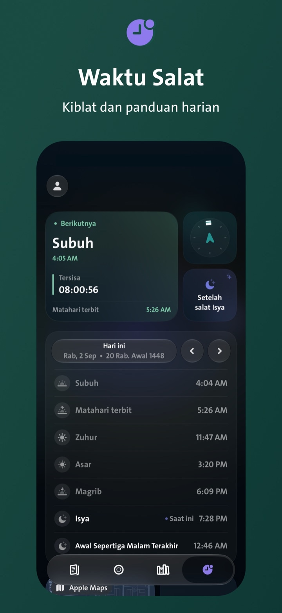
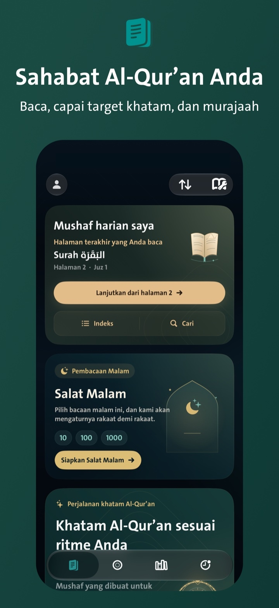
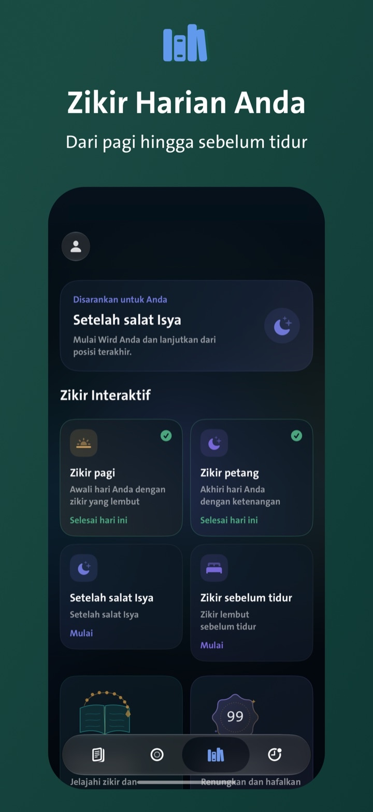
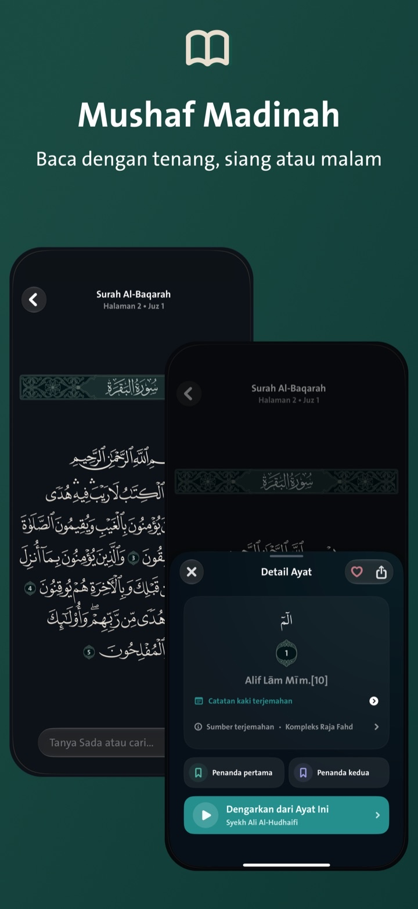
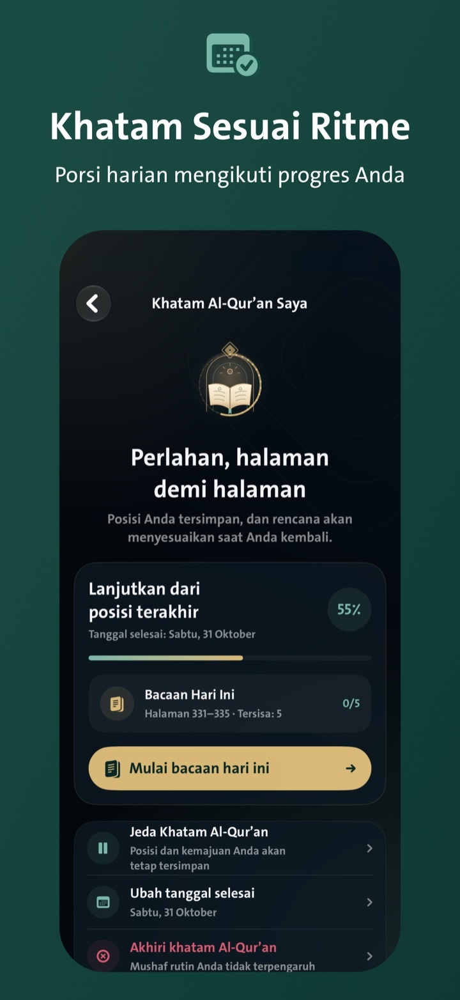
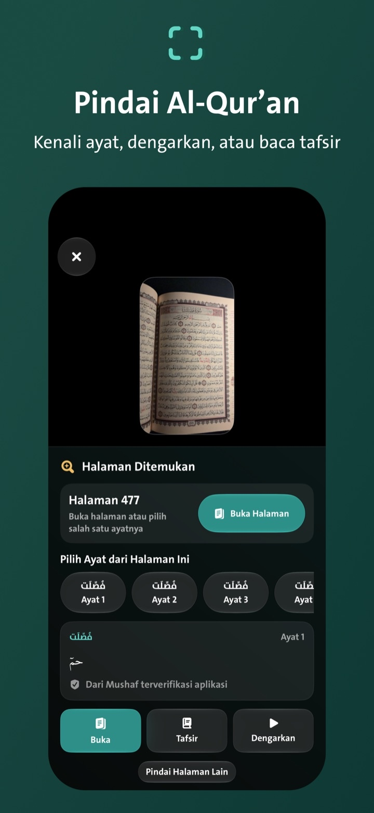
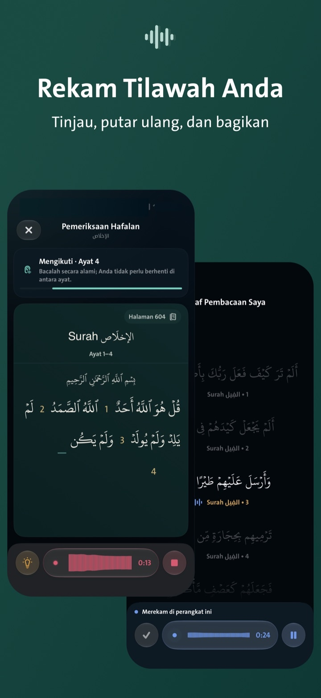

Subuh
Mulai hari dengan salat.
Lihat waktu salat berikutnya dan waktu yang tersisa, temukan arah kiblat, serta masjid terdekat.

Wird
Dari Subuh hingga sebelum tidur.
Mushaf Madinah, zikir harian, jadwal salat dan kiblat, serta target khatam yang menyesuaikan kemajuan Anda—semuanya dalam satu aplikasi.

Sehari bersama Wird
Wird menghadirkan fitur yang Anda perlukan pada waktunya—dari Subuh hingga zikir sebelum tidur.
Subuh
Lihat waktu salat berikutnya dan waktu yang tersisa, temukan arah kiblat, serta masjid terdekat.

Usai salat
Buka zikir setelah salat atau zikir pagi. Wird menyimpan posisi Anda agar mudah melanjutkannya.

Pagi
Lanjutkan dari halaman terakhir di Mushaf Madinah atau tampilan teks. Buka ayat untuk tafsir, terjemahan, audio, atau berbagi.

Bacaan hari ini
Tentukan tanggal selesai. Wird menghitung ulang bagian harian berdasarkan bacaan yang sudah Anda tuntaskan.

Sepanjang hari — Sada
Ketik, “Berapa kali Musa disebutkan?” Sada menelusuri teks Al-Qur’an di aplikasi lalu menampilkan hasil dan lokasi ayatnya.
Saat berzikir
Pilih zikir, lalu beralih antara kedua cara tanpa meninggalkan layar tasbih.
Petang
Ambil gambar halaman; Wird mengenali ayatnya agar Anda dapat membuka, mendengarkan, atau membaca tafsir.

Tinjau bacaan
Rekam bacaan dari dalam Mushaf, lalu dengarkan kembali atau bagikan saat Anda memilihnya.

Lebih banyak fitur
Murajaah hafalan
Qiyamulail
Pustaka zikir dan doa
Dari halaman Al-Qur’an
Langsung di layar Anda
Privasi diutamakan
Sebelum tidur
Selesaikan zikir petang dan sebelum tidur, tinjau target khatam, lalu lanjutkan esok dari posisi yang sama.
Unduh diApp StoreUntuk iPhone dan iPad, tersedia dalam bahasa Arab, Inggris, dan Indonesia.